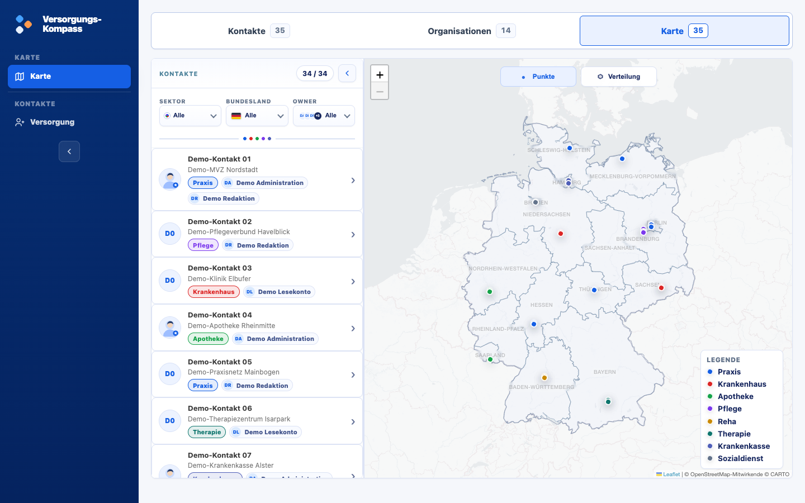
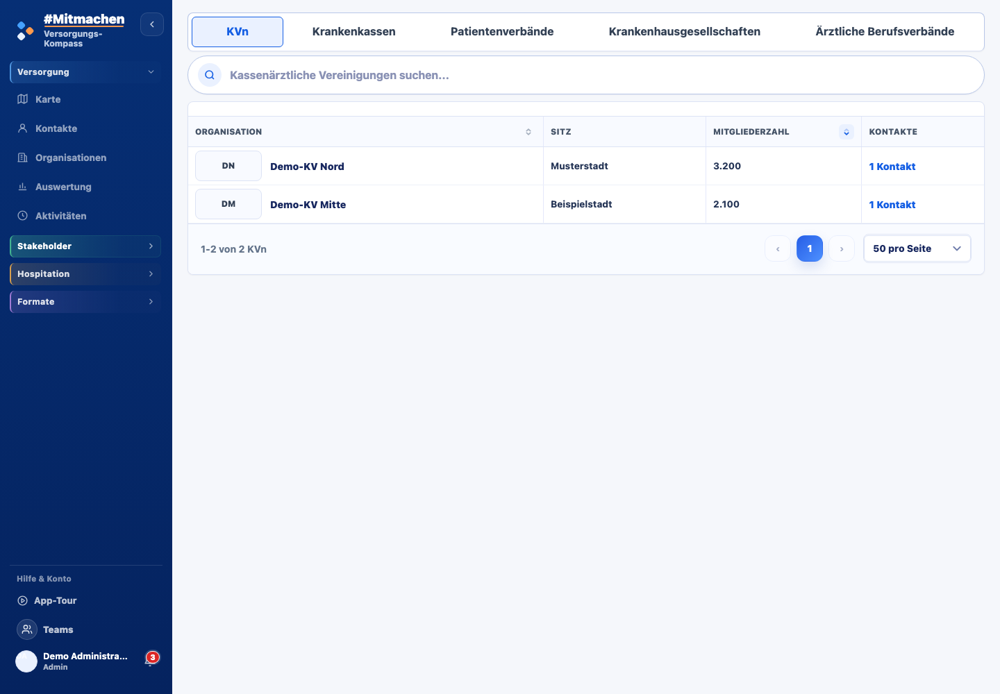
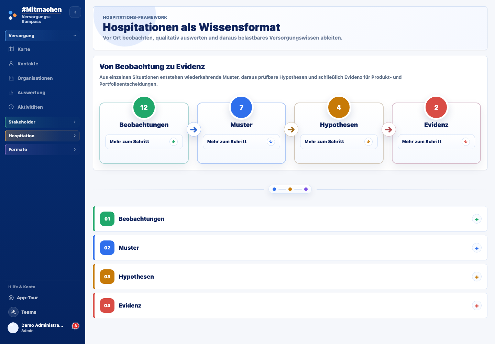
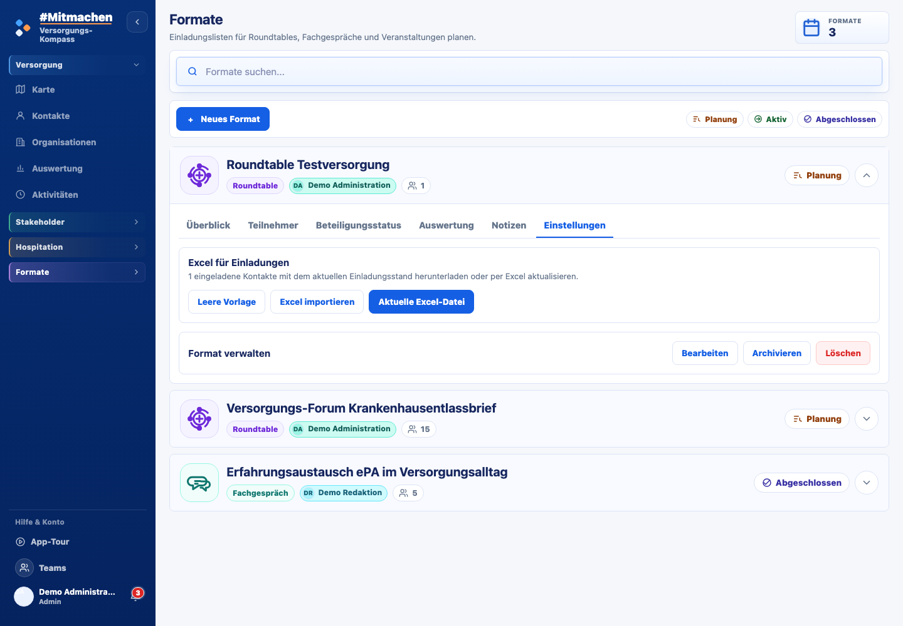

01
Versorgung
Versorgung regional sehen und Beziehungen gezielt pflegen.


Versorgung regional sehen und Beziehungen gezielt pflegen.

Organisationen, Vertretungen und Ansprechpersonen im Zusammenhang verstehen.

Vor Ort beobachten und Erfahrungen in belastbares Versorgungswissen übersetzen.

Die richtigen Perspektiven in Roundtables, Fachgesprächen und Veranstaltungen zusammenbringen.